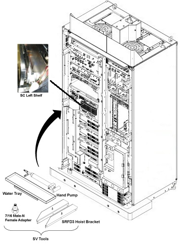

- 00000018WIA30B38F20GYZ
- id_131065233.4
- Sep 23, 2022 4:08:18 AM
RF Amp and UPM Functional Check
Prerequisites
| Required persons | Preliminary requirements | Procedure | Finalization |
|---|---|---|---|
| 1 | Not Applicable | 15 minutes | 5 minutes |
| Item | Quantity | Effectivity | Part number | Manufacturer |
|---|---|---|---|---|
| Power Measurement Kit | 1 | - |
46-317724g1 or g2 | - |
| 25 KW 30 dB Attenuator (Dummy Load) | 1 | - |
46317724p14 | - |
| 50 Ohm Terminator | 1 | - |
46-265874p1 | - |
| 7/16Male -N Female Adapter (Attached in System Cabinet) | 1 | - |
5166139 | - |
| ||||
| Condition | Reference | Effectivity |
|---|---|---|
|
Properly calibrated RF Head, Body . | - | - |
About this task
The UPM Functional checks for 1.5T consist of three automated tests:
-
Average power at TG=200
-
RF Inhibit test (Check that RF is disabled when inhibit condition)
-
Trip Test
All 3 automated tests must pass to ensure the correct operation of the Universal Power monitor system.
Run both Head and Body UPM Functional checks for the proper system type.
1.5T BODY RF Amp and UPM FUNCTIONAL CHECK
1.5T BODY RF Amp and UPM FUNCTIONAL CHECK Setup
Procedure
- Remove the Body RF cable from J4. Connect the RF dummy load
into J4. Use 7/16 Male - N Female Adapter attached in System Cabinet.Note:
If the body section of the 1.5T CSA Max Power RF Output and Calibration procedure was just completed, configuration is the same. You can leave the head RF cable disconnected and body can keep the wattmeter in line. It will not change the outcome of the calibration.
Note:7/16Male -N Female Adapter is located at System Cabinet Left Shelf. Remove left cover and find it. See Figure 2Figure 2. Built In Service Tool 
Figure 3. Plug the Dummy Load into J4, Body Out 
Setting up Software Tool to Calibrate UPM – Body Forward Power
About this task
This tool must see a Landmark only. Do not connect the head coil. Simply Landmark on the cradle where the Body Phantom would be.
Procedure
1.5T HEAD RF Amp and UPM FUNCTIONAL CHECK
1.5T HEAD RF Amp and UPM FUNCTIONAL CHECK Setup
Procedure
Setting up Software Tool to Calibrate UPM – Head Forward Power
About this task
-
This tool must see a Landmark only. It is not necessary to have a Head Coil in place. Simply Landmark on the cradle where the Head Phantom would be.
Procedure
Troubleshooting RF Amp and UPM
Procedure
- Solution 1: Repeat the UPM Functional Test for the receive chain that failed. (Head or Body).
- Solution 2:
- Reset TPS
- Repeat the UPM Functional Test for the receive chain that failed. (Head or Body).
- Solution 3: Reboot the system.
- Solution 4
- Check if RF output power for the failed chain is within specification at TG=200. (Head or Body). If not, re-calibrate RF output power for the chain that failed. Perform Body and Head Maximum Power Setup and Calibration to check the RF output power.
- Repeat the UPM Functional Test for the receive chain that failed. (Head or Body).
Finalization
Procedure
- Place the RF ENABLE switch on front of exciter in the DISABLE (Down) position.
- Return the system to patient scanning configuration.
- Doing a TPS reset
- Perform test scan.